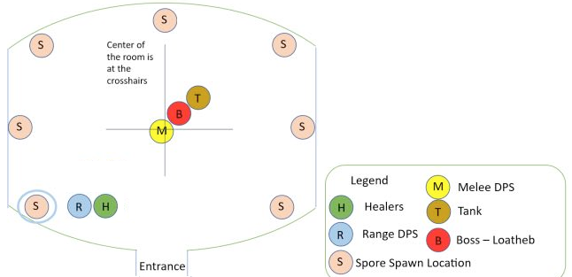

This is an in-depth guide to the Loatheb fight, including:
Consumables rotation for Inevitable Doom
Warlock hp/mana management
Spore spawn positioning
Spores spawn every 13 seconds. When you kill the spore, the closest 5 people in range get the Fungal Bloom buff, which increases melee critical hit chance by 50% and spell critical hit chance by 60%, and makes all spells and abilities cause no threat. Fungal Bloom lasts for 90 seconds. Therefore, you can have a rotation of up to 7 spore groups with basically full buff uptime. While it is a beneficial effect (except on tanks), it counts as a debuff.
Spores spawn opposite of Loatheb's current position, in one of the 7 spawn points shown below. The spawn points are all of the corners and sides of the room, except for the entrance doorway. Position Loatheb slightly off the center of the room to control where the spores will spawn - for example, tank Loatheb off center towards the far right corner of the room to make spores spawn in the near left corner. If Loatheb moves, the spore spawn point changes to whichever spawn point is opposite Loatheb's new position, so avoid that.
The spores only have 763 hp, so be careful not to kill them before all five people who are getting the buff are in range. Spores slowly move toward Loatheb or the center of the room. Make sure to kill the spore before it reaches the tank, since you don't want your tank affected by the zero-threat part of Fungal Bloom.
Ranged DPS and healers should stack near the spore spawn point to minimize time spent moving to get the spore, but far enough away from the spore spawn point and the path of the spore to avoid interfering with other groups getting the buff.
This image shows the spore spawn points and an example of positioning for the fight. In this example, the boss is tanked off center towards the far right corner of the room, so the spore spawns in the near-left corner of the room (left of the entrance). This minimizes how much ranged and healers have to run to get into position.

Loatheb casts Inevitable Doom every 30 sec starting at 2 minutes, dealing 2550 shadow damage to the entire raid after 10 sec (so the first Inevitable Doom debuff is applied at 2:00 and inflicts damage at 2:10). This cannot be resisted. After 5 min, it's cast every 15 sec.
Every single person except the Main Tank needs to self-heal the dooms with consumables. Otherwise you will simply die after a couple Dooms, because all healing spells have to go to the Main Tank. One exception is that somebody else can bandage you - it is very beneficial for healers to bandage DPS so that they can keep DPSing for those 8 seconds.
Your main sources of self-healing are:
Greater Shadow Protection Potion (GSSP) (2 min cd): absorbs 2600 (1950-3250) damage. Note that any extra shield left over can help reduce damage of the next doom too.
Healthstone (or Whipper Root Tuber) (2 min cd): the biggest healthstone heals 1440 (can crit for 2160). You can carry multiple healthstones with lower talents/ranks as discussed in the Healthstones section below, but most people will only need one.
Bandage (1 min cd): heals 2000.
Melee need to avoid poison aura while bandaging, since the poison aura ticks will interrupt bandaging. This means either stepping out of range of the Poison Aura, using a cleanse, or timing the bandage between ticks - see the Poison Aura section below.
Healers can and should bandage DPS so they can DPS more instead of spending 8 sec bandaging themselves (obviously when it's not your turn to heal the Main Tank). This is easiest for ranged DPS since you don't have to worry about Poison Aura, but is also possible for melee DPS.
Note: healthstones and healing potions can crit for 50% more effect, and their crit chance is based on your spell crit and benefits from the spore crit buff, so they are more likely to crit than not with the spore buff.
Alternative potions include:
Major Rejuventation Potion: restores 1600 (1440-1760) of both hp and mana, healing can crit for 2400 (2160-2640), and crits are very likely since it benefits from the spore crit buff (mana part can't crit). Much better than GSSP for warlocks in particular, since it gives you more total resources, plus warlocks have shadow ward which doesn't stack with GSSP. Any casters who need to replenish mana can also benefit from it.
Major Healing Potion: 1400 (1050-1750), can crit for 2100 (1575-2625). Cheaper option when you know you can finish the fight quickly and survive with less self-healing.
Your standard DPS active-use potions: If you can get away with skipping a GSSP entirely, you can use your normal DPS potions instead, e.g. Major Mana, Mighty Rage, etc. You can also use one of these potions at the start of the fight, early enough that your potion cooldown is available again for your first in-combat GSSP.
https://wow.gamepedia.com/Loatheb_(Classic) shows a typical self-heal rotation - these are the timestamps that each Doom hits you and the consumables you use after each Doom hits:
| Prior to encounter | Greater Shadow Protection Potion (GSSP) |
| 2:10 | GSSP (Doom absorbed by GSSP) |
| 2:40 | Nothing (Doom absorbed by GSSP) |
| 3:10 | Bandage |
| 3:40 | Healthstone |
| 4:10 | Bandage and GSSP |
| 4:40 | Nothing (Doom absorbed by GSSP) |
| 5:10 | Bandage |
| 5:25 | Anything |
Most raids can kill Loatheb in around 4-5 minutes or less, and you can expect to survive the Inevitable Dooms until about 5-6 minutes with these consumes, depending on your HP.
Each Doom deals 2550 damage, which is significantly more than the healing you get from bandage/healthstone, and close to the average GSSP absorb. So as the fight goes longer, your hp will gradually drop, and then starting after the 5 minute mark you can only heal/mitigate every other doom with your consumables, so the raid will quickly start dying after a couple more Dooms.
In general, the principle is to be using each consumable as soon as you've taken enough damage to get most or all of the benefit, and then repeating on cooldown.
A typical rotation, shown in the table above, is to absorb the first Doom with your pre-popped GSSP, then to absorb/heal the Dooms (which start spaced 30 sec apart) with GSSP, Bandage, Healthstone, Bandage, and then repeat the rotation on cooldown. This order starts with GSSP which has the most mitigation value, and also absorbs the damage instead of taking the damage and then healing it afterwards, which matters if your health is low enough that the Doom would kill you. So it is typically the safest rotation, particularly in case you get unlucky (low GSSP absorbs and no healthstone crits). However, about half the time your first GSSP will still have some leftover absorb hp left, and this is wasted if you pop another GSSP.
So another good choice of rotation is the order Bandage, GSSP, Bandage, Healthstone, shown in the table below. This tends to leave you with more HP on average, because it doesn't waste any of the GSSP left over after the first doom, but tends to be riskier because it lets your health dip lower earlier, particularly if you get unluckily low absorbs/heals. The exact comparison depends on your max hp, see the spreadsheet to calculate your survivability. Another advantage is this gives you time to use a regular DPS potion (e.g. Major Mana, Mighty Rage) in the first 40 or so seconds of the fight, and have your potion cooldown ready again to GSSP after the 3:40 Doom.
| Prior to encounter | Greater Shadow Protection Potion (GSSP) |
| 2:10 | Nothing (Doom absorbed by GSSP) |
| 2:40 | Bandage and GSSP |
| 3:10 | Nothing (Doom absorbed by GSSP) |
| 3:40 | Bandage |
| 4:10 | Healthstone |
| 4:40 | Bandage and GSSP |
| 5:10 | Nothing (Doom absorbed by GSSP) |
| 5:25 | Anything |
Another possible strategy is a hybrid of these two: you could check whether your GSSP absorb buff is still up after the first Doom - if it is not, then pop your next GSSP for the 2nd doom; if it is, wait until the 2nd Doom, then bandage it and pop your GSSP for the 3rd Doom.
If your kill times are fast enough, you can replace or skip some of the consumes - e.g. skip a bandage, or replace a GSSP with a regular DPS potion. However, this of course comes with the risk of not surviving if the fight goes too long. Each self-heal you skip means you will die roughly one Doom earlier. If you are nearing the end of the fight and know you have enough hp to survive, or if your kills are reliably fast enough, it's a good idea to adjust your rotation to do more DPS and less self-healing.
There are also many gear options that can provide self-healing, which can be quite helpful. If you have to trade off some DPS for self-healing, it may be worth it for the extra survivability in case the fight goes long enough that you need the extra healing, or if it means you can e.g. skip a bandage and do more DPS.
Also remember that if you kill Loatheb just after Inevitable Doom goes out, you will still take damage at the end of the debuff's 10 sec duration, even if you've already killed Loatheb - so make sure to stay alive even after the fight is over.
Loatheb's other source of raid damage is Poison Aura, which deals 196 nature damage every ~6 sec to anyone near the boss, i.e. melee. Poison Aura is applied every 14-15 seconds and ticks twice (after 6 seconds and 12 seconds).
It can be cleansed, but healers cannot cast cleansing spells because they are affected by Corrupted Mind and place you on your 1 minute healing spell cooldown. However, it can be self-cleansed with consumables like Elixir of Poison Resistance, Anti-Venom, etc.
Horde can use Poison Cleansing Totem for melee, which avoids almost all of the Poison Aura damage, and can also use Healing Stream Totem for a bit of extra healing - totems do not count against Corrupted Mind.
Alliance can use Judgement of Light to heal melee - this more than offsets the Poison Aura damage.
Melee affected by Poison Aura may need to step out of poison aura to bandage, since the poison aura ticks will interrupt bandaging, unless they either time the bandage carefully, or cleanse the Poison Aura (via Poison Cleansing Totem or self-cleanse consumables). With a cleanse, healers can get a full bandage without interruption on melee while they are DPSing, or the melee DPS can self-bandage without having to move away from the boss. Without a cleanse, if you start bandaging right after the second Poison Aura tick (when the debuff falls off), there's a 2-3 seconds before Poison Aura gets applied again and 6 seconds before it first ticks, for a total of 8-9 seconds, enough time to get a full bandage.
Melee can also pre-pot a Greater Nature Protection Potion (GNPP) to absorb some Poison Aura damage at the start of the fight. However, this is nearly worthless for Horde groups with Poison Cleansing Totem, and for Alliance with Judgement of Light, since that is more than enough to heal the Poison Aura damage.
The Loatheb fight plays very differently for Warlocks, because you need to spend your HP via Life Taps to get mana and keep DPSing, but can't get any normal heals.
tldr: Prepot GSSP, start tapping early and using Major Rejuventation Potions, Healthstones, Bandages early to get their cooldowns rolling - use them when you can get full value, there's no fixed consumables timeline. Start with Succubus DS and FelDom to sac+DS Voidwalker mid-fight (e.g. around 3 minutes). Use Shadow Ward and Death Coil.
Key ways to maximize your DPS and sustainability are:
Use Major Rejuvenation Potion instead of GSSP during the fight. Major Rejuventation Potion restores 1600 (1440-1760) of both hp and mana, healing can crit for 2400 (2160-2640), and since potions use your spell crit chance you'll have nearly 100% potion crits with the spore crit buff (mana part is not affected by crit). This is much better than GSSP for warlocks, since it gives you more total resources, and warlocks have shadow ward which doesn't stack with GSSP. You should still pre-pot GSSP prior to the fight because there's no downside.
If your kill times are very short, and you don't need the healing, you can switch to Major Mana Potion because it restores less total resources but more mana, meaning you need fewer Life Taps and can DPS slightly more.
Use your consumables early and often - see below
Use Shadow Ward on cooldown (every 30 sec) to mitigate the Doom damage, starting after the first Doom. Shadow Ward doesn't stack with GSSP, you can only have the larger of the two absorbs at once, so for the first Doom you will have your pre-popped GSSP up, and you should start casting Shadow Ward after the first Doom hits. If your kills are reliably fast enough that you still have spare resources at the end, you can skip some Shadow Wards to save the GCDs for more Shadow Bolts.
Use Death Coil for some additional healing (2 min cd). In terms of raw DPS, it's worse than shadow bolt but better than Shadow Ward, so if you are confident the fight will end fast enough and you'll have spare resources, you ideally want to start by removing some Shadow Wards from your rotation, and then removing Death Coils.
You can wear 5/5 T2.5 for reduced SB mana cost or 2/8 T3 for the SB healing procs, if you have them.
For longer fights, you will need to use options that provide you with more sustainability, so that you don't run out of hp/mana. Your goal is to both stay alive and have enough mana available via Life Taps to continue DPSing - you want to avoid going entirely OOM and having to wand because that's a massive DPS loss.
You can use Voidwalker Demonic Sacrifice, and in particular can FelDom mid-fight to switch from Succubus DS to Voidwalker DS plus get the Voidwalker sacrifice shield - see below.
You can cast Drain Life, if a debuff slot is available - e.g. if you normally cast Corruption, you can switch to Drain Life for part of the fight, making sure not to use both at the same time. If you're SM spec Siphon Life is also an option, also only if you have a debuff slot available, e.g. using Siphon Life instead of Corruption. Make sure not to knock off debuffs as that's far worse for raid DPS than the small amount of healing these provide - you're better off downranking for example. Warlocks are not affected by the Corrupted Mind 1-min healing debuff - you can cast as many healing spells as you want. This is lower DPS than Shadow Bolt, but not too terrible - it's generally slightly better than downranking your Shadow Bolts. Switching to Voidwalker DS is better if you're DS/ruin spec, but if you're SM/ruin spec with a Corruption debuff slot, switching between Corruption and Drain Life to heal a bit is one of your better options for longer fights.
You can hard-cast summon a Voidwalker and sacrifice it for the shield - this plus Shadow Ward absorbs more than an entire Doom, but of course costs a lot of cast time and mana. It's roughly comparable to bandaging yourself, and if you're DS spec (reduced cast time/mana talent) it's generally slightly better than downranking Shadow Bolts. Due to the 30 sec duration of both Sac and Shadow Ward, prior to 5 min they together can only absorb 1 Doom; you only get the maximum benefit after 5 min when the dooms are every 15 sec. If things are really going south it's possible to keep yourself alive for a very long time (although with heavily reduced DPS) by doing this repeatedly, along with using your consumables.
You can downrank shadow bolt if you are running out of resources - see below. This is generally a bit lower DPS than the above options.
While these sacrifice DPS early in the fight, as the fight goes longer they gain value, and are better overall DPS for long fights. You will need to tweak exactly how much of these you use depending on your kill times - generally you maximize your DPS by doing just enough to avoid running out of resources at the end of the fight.
Another key mechanic for Warlocks is Remove Curse, which removes all curses on Loatheb. It is cast every 30 seconds, starting with the first cast about 3 sec into the fight, so you will need to re-apply your curses (Reck, etc). Corruption is not a curse and is not affected.
Use your consumables early and often. Do not wait for Inevitable Dooms to start healing yourself. Start Life Tapping early so that you can start using your healing cooldowns early. (Of course, try to life tap or use other instant casts while moving to the spore to maximize uptime, as usual.) Use potions, healthstones, and bandages on cooldown as soon as your hp/mana is down enough to get most or all of the benefit, although preferably use your potions/healthstones after you get the spore crit buff. Ideally get a healer to bandage you. There's no need to especially worry about timing your self-healing cooldowns with the Dooms - just follow the principle of using them on cooldown as soon as your hp/mana is down enough.
Here is an example of what your consumables timeline might look like, using consumables as early as possible in the order bandage, Major Rejuv, bandage, healthstone. This is just one example and you can tweak the order depending on your raid. E.g. depending on fight length, whether you are getting bandaged by a healer or yourself, and which spore group you are in, you can choose to reorder potions vs bandages first. These timings also assume you don't have the benefit of the T2.5 mana reduction or T3 vampirism set bonuses and can spend mana as fast as possible at the start of the fight, which may not be true in practice - do not pop a consumable when it would overheal you, instead wait until you can get full value.
| Prior to encounter | Prepot GSPP | |
| 0:25 | lifetap x2 -> get bandaged by a healer (repeat on cooldown) | |
| 1:10 | lifetap x3 -> Major Rejuvenation Potion (repeat on cooldown) | |
| 1:25 | lifetap x2 -> Bandage | |
| 1:40 | lifetap x2 -> Healthstone (repeat on cooldown) | |
| 1:50 | lifetap x1 -> Death Coil (repeat on cooldown) | |
| 2:10 | Doom 1 (GSSP absorbs) | start casting Shadow Ward on cooldown |
| 2:25 | lifetap x2 -> Bandage | |
| 2:40 | Doom 2 | |
| 3:10 | Doom 3 | Major Rejuvenation Potion |
| 3:25 | Bandage | |
| 3:40 | Doom 4 | Healthstone |
| 3:50 | Death Coil | |
| 4:10 | Doom 5 | |
| 4:25 | Bandage | |
| 4:40 | Doom 6 | |
| 5:10 | Doom 7 | Major Rejuvenation Potion |
| 5:25 | Doom 8 | Bandage |
| 5:40 | Doom 9 | Healthstone |
| 5:50 | Death Coil | |
| 5:55 | Doom 10 |
Early in the fight, you'll spend some mana, life tap after you've spent enough mana, and then heal up once you've spent enough hp through life taps to get full value from each consumable. The life taps listed are roughly how many you need in order to get full value. Later in the fight, you will need more life taps to replenish your mana, and also be taking damage from Inevitable Dooms, so you generally won't be at full health and mana, and you can basically just keep using your consumables on cooldown. Make sure that you always have enough health to survive the next Doom - 2550 damage minus Shadow Ward or other absorbs. If you're running out of mana and don't have enough health left to safely tap and survive the next Doom, that means you need to do something to sustain yourself, such as using Voidwalker Sacrifice/DS, downranking, or any of the other strategies listed above.
If you know your fights always end at say 4 minutes, then it doesn't really matter if you use your first potion at e.g. 0:30 or 1:30, either way you can fit two into the fight. But if there's a chance of the fight going longer, say 5 minutes, then using your potions earlier means a higher chance of having another potion CD available, which means more hp/mana and therefore more DPS.
Before you start taking Inevitable Doom damage, use life taps as needed prior to your consumables. Life tap restores about 1200 mana for 1000 hp, depending on your spell power. So each consumable heals about 2 lifetaps worth of hp, although Major Rejuvenation Potion can heal up to about 2.5 lifetaps worth of hp with a high-end crit. You may need to tap more or less depending on whether your potions heal for the low or high end of the range, etc.
Shadow Bolt costs 380 mana, so one Life Tap is worth about 3.2 shadow bolts of mana. This means, for example, you can cast 7 shadow bolts and tap twice, which takes 20.5 sec, and then bandage (2000 hp). Your exact rotation will vary a bit depending on what other spells you are casting, e.g. curses. Healthstone is similar - a 1440 hp healthstone heals 50% more, 2160 hp, with crit. For Major Rejuvenation Potion, the maximum healing is 2640 with a crit, and maximum mana gain is 1760 (mana part can't crit), so to maximize value you would want to cast enough to tap 3 times plus spend 1760 additional mana, which is about 15 shadow bolt casts + 3 life taps (42 seconds).
Once you start taking damage from Inevitable Dooms, you don't need to lifetap if you've already taken enough damage for your consumable to heal. Life tap as needed to restore your mana - obviously if you are getting close to the end of the fight you can stop life tapping unless you need mana. It's ok if you stack two healing cooldowns in the same 30-second window and then don't have a healing cooldown available after the next Doom - you should have enough hp to survive two Dooms with Shadow Ward without any healing in between, then catch up with healing later when your cooldowns are available.
If you have to bandage yourself, rather than being bandaged by a healer, you will still need and want to bandage unless the fight is short - it's generally better to bandage for the hp/mana recovery than to have to save mana and sacrifice DPS by e.g. downranking Shadow Bolts. But you likely want to try to fit in more pots earlier, and fewer bandages. If you can end the fight with spare hp/mana then you'll want to skip some bandages, or use them as a last resort.
You can use Voidwalker Demonic Sacrifice (if you're DS spec). If you're using the above strategies and full consumables, you shouldn't need to use Voidwalker DS for the entire fight. Instead, you can start with Succubus DS for more DPS, and then mid-fight FelDom summon a Voidwalker and sacrifice it for both the shield (to absorb Inevitable Doom damage) and Demonic Sacrifice healing with this macro:
/cast Demonic Sacrifice /cast Sacrifice
This simply casts both Sacrifice (the Voidwalker pet ability) and Demonic Sacrifice at the same time, which gives you both effects (but avoid pressing this macro while on GCD, because then you only get one effect).
The optimal timing to FelDom switch is dependent on your fight length, etc, but typically a good time is around 3 minutes. For kills under about 4 minutes, you can usually use Succubus DS the entire fight without running out of resources if you're using full consumables. The longer your fight, the earlier you want to switch to Voidwalker, since you'll need more healing to sustain your mana.
The basic rule of thumb is: downrank your shadow bolts if (and only if) you would otherwise be running completely out of hp and mana, and have to resort to wanding. Lower ranks of shadow bolt are more mana-efficient (more damage per mana) but lower DPS, so you want to try to aim for the highest rank of shadow bolt that will just use up all your resources at the end of the fight. Depending on how the fight is going (if the kill is going slower or faster, or if you're higher or lower on resources), you may want to adjust mid-fight to higher or lower ranks.
If you run completely out of resources, the only DPS you can do is wanding while getting spirit mana regen (which is very slow). For comparison, the wand with the highest DPS is the KT wand with 139 dps (most wands are much lower), plus spirit regen can allow you to cast SBs at roughly 150 dps, vs even rank 4 SB is 300 DPS, and of course higher ranks are higher DPS at the cost of more mana. (Don't use SB ranks 1-3, they have especially low SP coefficients even compared to their lower cast time, so they are worse than higher ranks - rank 4 is the most mana-efficient). Another issue is that if you're wanding with a shadow wand while other warlocks are casting shadow bolts, you'll be eating up their ISB stacks, so wanding is often a net DPS loss.
Comparing downranking to Voidwalker DS: Let's say you have 6000 hp, then Voidwalker DS gives 45 hps, which converts to 54 mps via life taps. Max rank SB (rank 10) is 152 mps, so net 98 mps with Voidwalker DS. Let's compare to downranking to rank 7 shadow bolt. SB rank 10 is 152 mps, rank 7 is 106 mps, so it saves 46 mps. Rank 10 SB does about 20% more damage than rank 7 with typical gear and full consumes (the difference is bigger with lower SP since then the base damage matters more). So from this initial approximation, max rank + Void DS is better than rank 7 + Succ DS, because it both does more DPS and uses less mana per sec. However, Void DS + higher rank SB also requires more life taps, and if you have a Corruption slot then Succ DS also benefits that. To account for those and get a more exact number, see the spreadsheet; overall it's not too big of a difference but Void DS + max rank SB typically comes out slightly ahead of downranking + Succ DS.
While mages and melee tend to benefit more from the spore crit buff, in terms of overall raid dps, and therefore often are placed into the earlier spore groups, it may be beneficial to have one Warlock in an earlier spore group to get higher Improved Shadow Bolt uptime.
Having more crit due to the spore buff makes crit less valuable on this fight in terms of stat weighting, so you could consider wearing slightly different gear (exchanging less crit for more hit or SP), although it doesn't make a very large difference. This is for two reasons: the higher your crit is, the more valuable spellpower and hit become, since the effects are multiplicative. And Improved Shadow Bolt only benefits from more crit to a certain extent - there's not much difference in ISB uptime when warlocks have 60%+ crit.
You also should try to life tap almost to full mana before you get spore, since you want more shadow bolts after spore and more life taps before spore.
Healthstones are unique, so you can only have one of each type in your bags, but healthstones that heal different amounts (due to different talent points or different spell ranks) count as separate items, meaning you can hold multiple in your bags. They still share the same 2 min cooldown.
This means you can have multiple warlocks with different points in the Improved Healthstone talent (2, 1, or 0), so you can have healthstone
On Loatheb, if you're following the typical consume rotation where you use your healthstone after the 3:30 doom, you can't use your 2nd healthstone until 2 minutes later after the 5:30 doom, and the fight is usually over by then. So having a second healthstone is typically not necessary, unless you also use one pre-doom, which mostly applies to the Main Tank and the warlocks.
Healthstones with different talent points but the same spell rank are called the same name - “Major Healthstone” - but have different item ids. So you can either click each one separately, or you can make a macro to use any one of them. The simplest macro will just use any one of them:
/use Major Healthstone
You can also make a macro to use them in a specific order with their item ids:
#showtooltip Major Healthstone /use item:19013 /use item:19012 /use item:9421
This is in order from the most hp to least hp talented version of Major Healthstone, you can change if desired. This will use the first in the list that is available, and the rest of the /use commands have no effect because it'll be on cooldown.
You can also hold lower-rank healthstones (Greater Healthstone, Healthstone, etc.) but they heal significantly less, as well as Whipper Root Tuber which is on the same cooldown. You can add these to your macro like:
#showtooltip /use Major Healthstone /use Greater Healthstone /use Whipper Root Tuber /use Healthstone
Corrupted Mind allows healers to cast only one healing spell every minute - all heal, cleanse, dispel, etc. spells are placed on a 60 second shared cooldown.
This is pretty straightforward to handle - healers should be on a 60 sec rotation, and take turns casting their single biggest heal spell. Make sure to always cast your heal when it's your turn, even if the tank doesn't currently need it - if you delay, that means there will be a gap in the rotation next minute where nobody is able to cast a heal. Take advantage of HoTs as well, such as Priest 8/8 T2 Greater Heal, and space HoTs out in the rotation. If needed, you can also adjust the exact timing of heals in the rotation depending on how big each of the heals are - you generally want your healing to be spaced out as evenly as possible.
Healers should make sure not to cast cleanse or dispel spells, as those will also put your healing spells on the 60 sec cooldown. You can find a list of all the spells that are on the Corrupted Mind shared 1 min cooldown on the Corrupted Mind debuff page (there's a separate one for each class): Priest, Druid, Paladin, Shaman.
Non-healing classes are not affected by Corrupted Mind, so there's no limitation on how often Warriors can cast Bloodthirst or Warlocks can cast Drain Life, for example.
Since healers can't do their normal healing the rest of the minute, they can do some light DPS the rest of the time - just make sure not to use up all your mana, and avoid using mana potions since you'll need your potion cooldown to mitigate Inevitable Dooms. Healers can also bandage DPS, allowing them to DPS instead of bandaging themselves, which increases raid DPS substantially, as discussed above.
Engineers can consider using the Major Recombobulator trinket, particularly healers/casters since the healing scales with healing power. It's a trinket that restores average 500 hp and mana (baseline) on a target (which can be yourself) - the target does not need to be polymorphed. This can be used to self-heal plus restore mana, or it can be used as an emergency heal on the main tank. Healers can use it since it does not conflict with Loatheb's 1 min healing cd debuff, and they get the most benefit due to +healing power and least opportunity cost compared to another trinket.
Note that Recombobulator has a 5 minute cooldown, but also shares a cooldown with healthstone, whipper root tuber, etc. (The cooldown is on the caster, not the target - it doesn't matter if the target used a healthstone in the last 2 minutes, only if the caster is on cooldown).
Priests with the Spirit of Redemption talent can cheese it since you can do 10 seconds of unlimited healing after dying (it's not affected by Loatheb's 1 min healing cd debuff). You can use Soulstones and Battle Rezes to rez the priest, so that they can die again and get another 10 seconds of unlimited healing. Use low-rank soulstones so the priest rezes with less health and dies again quicker.
One issue is that it can be difficult to control the timing enough to be able to use this for emergency main tank heals. Beyond just waiting for the next Inevitable Doom to kill you, there are a few ways you can somewhat control the timing of your death. If your hp is sufficiently low, you can step into Loatheb's poison aura to take some damage, and you could also use items like Skull of Impending Doom.
There may be a problem with the rez timer when you die too often, but I believe that does not apply to soulstones.
Vampiric embrace is quite strong on Loatheb because you can pump a lot of healing for the tank (plus yourself and 3 others) over its duration.
It is affected by the Corrupted Mind debuff so you can only cast it every 60 sec. It lasts one minute but gets decursed by Loatheb's Remove Curse, which is cast every 30 sec. Therefore, you should cast it immediately after Remove Curse goes out (watch the warlock curses to see when), so you have it up for half the fight (30 sec out of every minute).
It heals each party member for 20% of your dps without the talent, 30% if talented. Let's say your direct dps is 350, then you can do 20% * 350 dps * 30 seconds = 2.1k healing per minute to each party member, or 3.2k with the talent - so about as much as a healer's single spell per minute to the main tank, plus 4 bonus raid heals!
However, you can't just treat a SPriest as another healer in your rotation, since VE heals over a duration of 30 sec out of each minute - you can treat it sort of like an extended, large HoT.